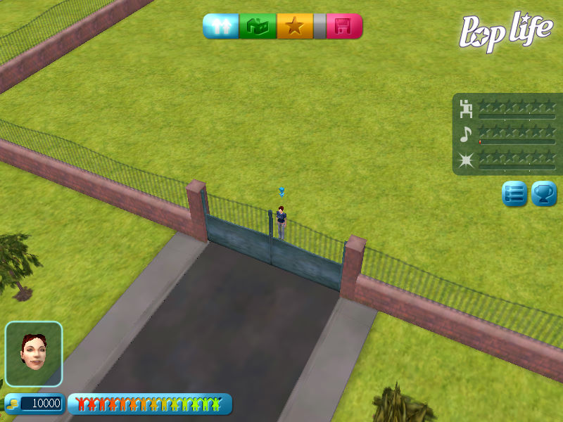

名稱：明星手札 (Pop Life，中文版) 簡介：Monte Cristo 2004年出品的明星訓練養成遊戲，由Atari中文化並代理發行 [待補]。  保護：光碟StarForce 3.04（光碟序號：TK62H2US4VWYAUZQ5BXUHT26V） 備註：繁中版為2.02版 備註：VirtualBox執行後若看不到滑鼠，請搭配DxWnd（不能全螢幕），或改用VMware。 檔案：nocd.rar = 免光碟檔
